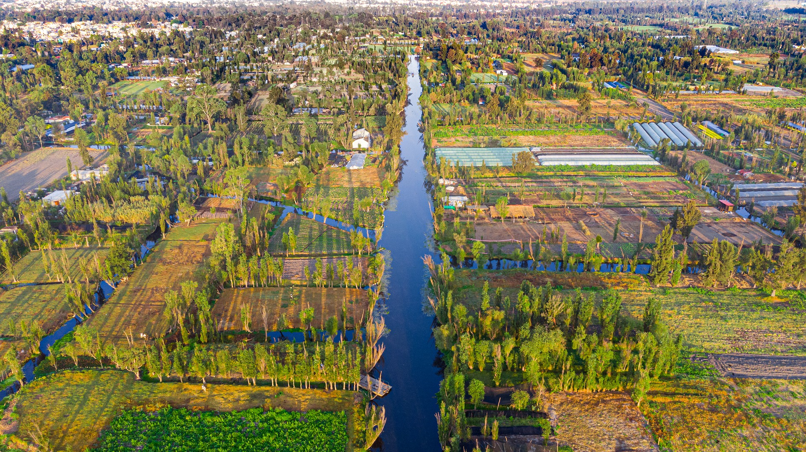

Recoridos turísticos "MICTLAN"
Xochimilco tiene particular importancia por la existencia de las chinampas. Tienen origen en una técnica agrícola mesoamericana que fue desarrollada y compartida por varios pueblos del Valle de México. Tras la desecación de los lagos del Anáhuac, solo Xochimilco y Tláhuac conservan la chinampería. Por ello, es uno de los principales destinos turísticos de Ciudad de México que atrae tanto a visitantes mexicanos como a extranjeros. Con el propósito de contribuir a la conservación del entorno lacustre, la Unesco proclamó las chinampas de Xochimilco como patrimonio cultural de la Humanidad en 1987. La declaratoria ha estado en dos ocasiones en peligro de perderse debido al deterioro ecológico ante el avance de la urbanización.
